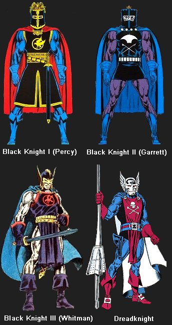
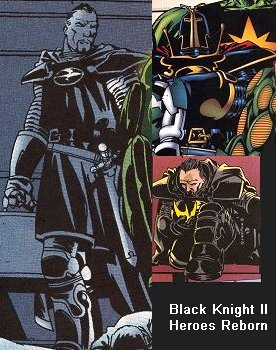
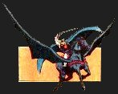
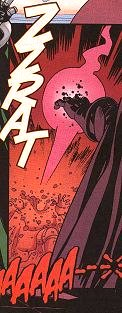

|
This custom was made from a Warlands body with Power Rangers Knasty Knight upper head and Medieval Spawn 1 lower head. It was made as part of the Sinister Six Masters of Evil entry for Custom Con 7.
When I first showed this custom, there was a fair amount of head scratching, wailing, and gnashing of teeth because it doesn't resemble any version of the character. To a certain extent this is true, but not entirely. In response, here is a long story of a quick custom. So, sit right back, and you'll hear a tale...
I started out wanting to make some comic knight customs, such as the various Black Knights and Dreadknight, so I bought some medieval armored figures. However, upon researching the characters, I discovered that they all wore chain mail and cloth, with virtually no armor plating except helmets:

I pretty much gave up on the project until I saw the Heroes Reborn Masters of Evil one shot comic. The Black Knight (Nathaniel Garrett, Black Knight II) had an updated version of the original Black Knight costume, which looked much better to me than any previous incarnation. Notice the shoulder armor, leg armor, gauntlets, and black & gold color scheme. My interest was rekindled, and the Custom Con 7 Masters of Evil project got me going. See reference pics below:

I quickly realized that reconstructing the helmet was going to be very difficult, so I improvised using the lower half of a Medieval Spawn head and the upper half of a Power Rangers Knasty Knight head. The Knasty Knight had the batwing theme from the early version of Dane Whitman's (Black Knight III) helmet, plus a bat head rather than the eagle of the version I was doing. As an added bonus, the Warlands base figure has a batwinged sword, so the whole "bat" theme comes together.
|

|
I hope to create a custom of Valinor, the Black Knight's batwinged steed. Of course, it was Whitman, not Garrett, that rode this horse, but it fits in with the rest of the theme, and it will further annoy and confuse people.
|
In case you were wondering, the Heroes Reborn Black Knight met a quick demise by presuming himself to be a worthy partner of Doom. ZZRAT!

|